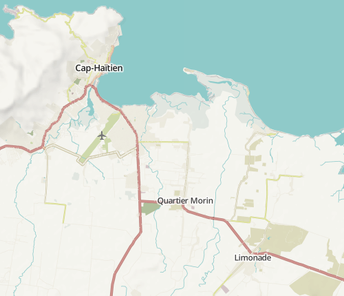

HOT // NACIS
✍ a short introducon
by Yohan boniface / @infomagicien, Will Skora @skorasaurus, @wwwolford, @jaakkoh and sev menard.
Wikipedia + maps IMAGE
+text
and now it's perfect for ignite talks (wait 3 seconds)
geodata non-existant or $ .
Comparison of gmaps and osm with gif
additionally, in crises or situations where things rapidly develop (pun?), edit data quickly.
z15: features
hospitals, Govt buildings, schools
Things that aren't normally seen all the time.
pretty colors: light and pastel
designed w/ love in tilemill and carto
things that are not normally on a map
Icons from Noun Project | Maki | Custom (CC0)
slides of our custom icons made more.
This is regular
This is in P
Styling highways by :
surface +
classification +
condition (smoothness)
img of the different areas
code can be share and adapted
in print or digitally.
 io
a work in progress